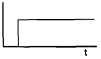
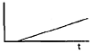
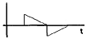
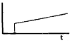

가스산업기사 (2012-09-15 기출문제)
1과목: 연소공학
1. 등심연소 시 화염의 길이에 대하여 옳게 설명한 것은?
- 공기 온도가 높을수록 길어진다.
- 공기 온도가 낮을수록 길어진다.
- 공기 유속이 높을수록 길어진다.
- 공기 유속 및 공기온도가 낮을수록 길어진다.
(정답률: 80%)

2. 연료와 공기를 인접한 2개의 분출구에서 각각 분출 시켜 양자의 계면에서 연소를 일으키는 형태는?
- 분무연소
- 확산연소
- 액면연소
- 예혼합연소
(정답률: 61%)
3. 연소속도 지배 인자로만 바르게 나열한 것은?
- 산소와의 혼합비, 산소농도, 반응계 온도
- 웨버지수, 기체상수, 밀도계수
- 착화에너지, 기체상수, 밀도계수
- 발열반응, 웨버지수, 기체상수
(정답률: 77%)
4. 폭굉을 일으킬 수 있는 기체가 파이프 내에 있을 때 폭굉 방지 및 방호에 대한 설명으로 옳지 않은 것은?
- 파이프의 지름대 길이의 비는 가급적 작도록 한다.
- 파이프라인에 오리피스 같은 장애물이 없도록 한다.
- 파이프라인에 장애물이 있는 곳은 가급적이면 축소한다.
- 공정 라인에서 회전이 가능하면 가급적 완만한 회전을 이루도록 한다.
(정답률: 83%)
5. 폭발한계(폭발범위)에 영항을 주는 요인으로 가장 거리가 먼 것은?
- 온도
- 압력
- 산소량
- 발화지연시간
(정답률: 87%)
6. 산소가 20°C, 5m3의 탱크 속에 들어 있다. 이 탱크의 압력이 10kgf/cm2이라면 산소의 질량은 약 몇 kg인가? (단, 기체상수 R은 848kg·m/kmol·K이다.)
- 0.65
- 1.6
- 55
- 65
(정답률: 42%)
7. 고체연료의 탄화도가 높은 경우 발생하는 현상이 아닌 것은?
- 휘발분이 감소한다.
- 수분이 감소한다.
- 연소속도가 빨라진다.
- 착화온도가 높아진다.
(정답률: 58%)
8. 1kg의 공기를 20℃, 1kgf/cm2인 상태에서 일정 압력으로 가열팽창시켜 부피를 처음의 5배로 하려고 한다. 이때 필요한 온도 상승은 약 몇 ℃인가?
- 1172
- 1292
- 1465
- 1561
(정답률: 57%)
9. 화염의 색에 따른 불꽃의 온도가 낮은 것에서 높은 것의 순서로 바르게 나타낸 것은?
- 암적색 → 황적색 → 적색 → 백적색 → 휘백색
- 암적색 → 적색 → 백적색 → 황적색 → 휘백색
- 암적색 → 백적색 → 적색 → 황적색 → 휘백색
- 암적색 → 적색 → 황적색 → 백적색 → 휘백색
(정답률: 80%)
10. 용기내부에서 폭발성 혼합가스의 폭발이 일어날 경우에 용기가 폭발압력에 견디고 외부의 폭발성 분위기에 불꽃이 전파되는 것을 방지하도록 한 방폭구조는?
- 압력방폭구조
- 내압방폭구조
- 유입방폭구조
- 안전증방폭구조
(정답률: 84%)
11. 가연성가스의 폭발범위에 대한 설명으로 옳은 것은?
- 폭굉에 의한 폭풍이 전달되는 범위를 말한다.
- 폭굉에 의하여 피해를 받는 범위를 말한다.
- 공기 중에서 가연성가스가 연소할 수 있는 가연성가스의 농도범위를 말한다.
- 가연성가스와 공기의 혼합기체가 연소하는데 있어서 흔합기체의 필요한 압력범위를 말한다.
(정답률: 80%)
12. 다음 가스 중 비중이 가장 큰 것은?
- 메탄
- 프로판
- 염소
- 이산화탄소
(정답률: 71%)
13. 다음 가스가 같은 조건에서 같은 질량이 연소할 때 발열량(kcal/kg)이 가장 높은 것은?
- 수소
- 메탄
- 프로판
- 아세틸렌
(정답률: 56%)
14. 다음 중 시강특성에 해당하지 않는 것은?
- 부피
- 온도
- 압력
- 몰분율
(정답률: 59%)
15. 가연성 물질의 인화 특성에 대한 설명으로 틀린 것은?
- 증기압을 높게 하면 인화위험이 커진다.
- 연소범위가 넓을수록 인화위험이 커진다.
- 비점이 낮을수록 인화위험이 커진다.
- 최소점화에너지가 높을수록 인화위험이 커진다.
(정답률: 87%)
16. 공업적으로 액체연료 연소에 가장 효율적인 연소 방법은?
- 액적연소
- 표면연소
- 분해연소
- 분무연소
(정답률: 84%)
17. 다음 반응 중 화학폭발의 원인과 관련이 가장 먼 것은?
- 압력폭발
- 중합폭발
- 분해폭발
- 산화폭발
(정답률: 85%)
18. 76mmHg, 23℃에서 수증기 100m3의 질량은 얼마인가? (단, 수증기는 이상기체 거동을 한다고 가정한다.)
- 0.74kg
- 7.4kg
- 74kg
- 740kg
(정답률: 65%)
19. 상용의 상태에서 가연성가스가 체류해 위험하게 될 우려가 있는 장소를 무엇이라 하는가?
- 0종 장소
- 1종 장소
- 2종 장소
- 3종 장소
(정답률: 84%)
20. 다음 중 폭굉유도거리(DID)가 짧아지는 요인은?
- 압력이 낮을수록
- 관의 직경이 작을수록
- 점화원의 에너지가 작을수록
- 정상 연소속도가 느린 혼합가스일수록
(정답률: 76%)
2과목: 가스설비
21. LNG 인수기지에서 사용되고 있는 기화기 중 간헐 적으로 평균수요를 넘을 경우 그 수요를 충족(Peak Saving용)시키는 목적으로 주로 사용하는 것은?
- Open rack vaporizer
- Intermediate fluid vaporizer
- 전기 가압식 기화기
- Submerged vaporizer
(정답률: 64%)
22. 다음 중 금속피복 방법이 아닌 것은?
- 용융도금법
- 클래딩법
- 전기도금법
- 희생양극법
(정답률: 76%)
23. 원심압축기의 특징에 대한 설명으로 옳은 것은?
- 효율이 높다.
- 무 급유식이다.
- 기체의 비중에 큰 영향을 받지 않는다.
- 감속장치가 필요하다.
(정답률: 67%)
24. 관내부의 마찰계수가 0.002, 길이 100m, 관의 내경 40mm, 평균유속 1m/s, 중력가속도 9.8m/s2일 때 마찰에 의한 수두손실은 약 몇 m인가?
- 0.0102
- 0.102
- 1.02
- 10.2
(정답률: 46%)
25. 탄소강을 냉간 가공하였을 경우 나타나는 성질로 틀린 것은?
- 인장 강도 증가
- 단면 수축률 감소
- 피로한도 증가
- 경도 감소
(정답률: 60%)
26. 증기압축기 냉동사이클에서 교축과정이 일어나는 곳은?
- 압축기
- 응축기
- 팽창밸브
- 증발기
(정답률: 81%)
27. 다음 중 어떤 성분을 많이 함유하고 있는 탄소강이 적열취성을 일으키는가?
- B
- P
- Si
- S
(정답률: 66%)
28. 가연성가스를 충전하는 차량에 고정된 탱크 및 용기에 부착되어 있는 안전밸브의 작동압력으로 옳은 것은?
- 내압시험 압력의 10분의 8 이하
- 내압시험 압력의 1.5배 이하
- 상용압력의 10분의 8 이하
- 상용압력의 1.5배 이하
(정답률: 66%)
29. 도시가스 제조에서 사이크링식 접촉분해(수증기개 질)법에 사용하는 원료에 대한 설명으로 옳은 것은?
- 천연가스에서 원유에 이르는 넓은 범위의 원료를 사용할 수 있다.
- 석탄 또는 코크스만 사용할 수 있다.
- 메탄만 사용할 수 있다.
- 프로판만 사용할 수 있다.
(정답률: 80%)
30. 부탄의 C/H 중량비는 얼마인가?
- 3
- 4
- 4.5
- 4.8
(정답률: 71%)
31. 버너의 불꽃을 감지하여 정상적인 연소 중에 불꽃이 꺼졌을 때 신속하게 가스를 차단하여 생가스 누출을 방지하는 장치로서 불꽃의 도전성에 의한 정류성을 이용하여 불꽃을 감지하는 방식으로 대용량의 연소기에 사용하는 방식의 연소안전장치는?
- 열전대식
- 플레임로드식
- 광전식
- 바이메탈식
(정답률: 72%)
32. 고압가스 냉동장치의 용어에 대한 설명으로 옳은 것은?
- 냉동능력 : 냉매 1kg이 흡수하는 열량(kcal/kg)
- 체적냉동효과 : 압축기 입구에서 증기(건포화 증기)의 체적당 흡열량(kcal/m3)
- 냉동효과 : 1시간에 냉동기가 흡수한 열량 (kcal/h)
- 냉동튼 : O°C의 물 10톤을 0℃ 얼음으로 냉동시키는 능력
(정답률: 59%)
33. 배관 내의 마찰저항에 의한 압력손실에 대한 설명으로 옳지 않은 것은?
- 관내경의 5승에 반비례한다.
- 유속의 제곱에 비례한다.
- 관의 길이에 반비례한다.
- 유체점도가 크면 압력손실이 커진다.
(정답률: 66%)
34. 작동이 단속적이고 송수량을 일정하게 하기 위하여 공기실을 장치할 필요가 있는 펌프는?
- 치차펌프
- 원심펌프
- 축류펌프
- 왕복펌프
(정답률: 60%)
35. 역화방지 장치를 설치할 장소로 옳지 않은 곳은?
- 가연성가스를 압축하는 압축기와 오토크레이브사이
- 아세틸렌 충전용지관
- 가연성가스를 압축하는 압축기와 저장탱크사이
- 아세틸렌의 고압건조기와 충전용교체밸브사이
(정답률: 50%)
36. 프로판 20kg이 내용적 50L의 용기에 들어 있다. 이 프로판을 매일 0.5m3씩 사용한다면 약 며칠을 사용할 수 있겠는가? (단, 25℃, 1atm 기준이며, 이상기체로 가정한다.)
- 22
- 31
- 35
- 45
(정답률: 39%)
37. 총 발열량이 10000kcal/Sm3, 비중이 1.2인 도시가스의 웨베지수는?
- 8333
- 9129
- 10954
- 12000
(정답률: 70%)
38. 프로판의 비중을 1.5로 하면 입상관의 높이가 20m 인 경우 압력손실은 몇 mmH2O인가?
- 1.293
- 12.93
- 129.3
- 1293
(정답률: 73%)
39. 배관의 스케줄 번호를 정하기 위한 식은? (단, p는 사용압력[kg/cm2], s는 허용응력[kg/mm2]이다.)
- 10×P/s
- 10×s/P
- 1000×P/s
- 1l000×s/P
(정답률: 70%)
40. 펌프의 공동현상(cavitation)방지법으로 틀린 것은?
- 흡입양정을 짧게 한다.
- 양흡입 펌프를 사용한다.
- 흡입 비교 회전도를 크게 한다.
- 회전차를 물속에 완전히 잠기게 한다.
(정답률: 79%)
3과목: 가스안전관리
41. 지상에 설치된 저장탱크 중 저장능력 몇 톤 이상인 저장 탱크에 폭발방지장치를 설치하여야 하는가?
- 10톤
- 20톤
- 50톤
- 100톤
(정답률: 50%)
42. 용기의 종류별 부속품의 기호로서 틀린 것은?
- 아세틸렌 : AG
- 압축가스 : PG
- 액화가스 : LP
- 초저온 및 저온 : LT
(정답률: 72%)
43. 메탄이 주성분인 가스는?
- 프로판가스
- 천연가스
- 나프타가스
- 수성가스
(정답률: 79%)
44. 다음 중 분해폭발(分解爆發)을 일으키는 가스가 아닌 것은?
- 아세틸렌
- 에틸렌
- 산화에틸렌
- 메탄가스
(정답률: 70%)
45. 독성가스의 처리설비로서 1일 처리능력이 15000m3 인 저장시설과 21m 이상 이격하지 않아도 되는 보호시설은?
- 학교
- 도서관
- 수용능력이 15인 이상인 아동복지시설
- 수용능력이 300인 이상인 교회
(정답률: 84%)
46. 밸브가 돌출한 용기를 용기보관소에 보관하는 경우 넘어짐 등으로 인한 충격 및 밸브의 손상을 방지하기 위한 조치를 하지 않아도 되는 용기의 내용적의 기준은?
- 1L 이하
- 3L 이하
- 5L 이하
- 10L 이하
(정답률: 69%)
47. 저장량이 각각 1,000톤인 LP가스 저장탱크 2기에서 발생할 수 있는 사고와 상해 발생 Mechanism으로 적절하지 않은 것은?
- 누출 → 화재 → BLEVE → Fireball → 복사열 → 화상
- 누출 → 증기운확산 → 증기운폭발 → 폭발과압 → 폐출혈
- 누출 → 화재 → BLEVE → Fireball → 화재확대 → BLEVE
- 누출 → 증기운확산 → BLEVE → Fireball → 화상
(정답률: 67%)
48. 차량에 고정된 탱크로 고압가스를 운반할 때의 기준으로 틀린 것은?
- 차량의 앞뒤 보기 쉬운 곳에 각각 붉은 글씨로 “위험고압가스”라는 경계표시를 하여야 한다.
- 수소 및 산소탱크의 내용적은 1만 8천L를 초과 하지 아니하여야 한다.
- 염소탱크의 내용적은 1만 5천L를 초과하지 아니하여야 한다.
- 액화가스를 충전하는 탱크는 그 내부에 방파판 등을 설치한다.
(정답률: 85%)
49. 아세틸렌가스 충전 시 희석제로 적합한 것은?
- N2
- C3H8
- SO2
- H2
(정답률: 82%)
50. 저장탱크에 의한 액화석유가스저장소에서 지상에 설치하는 저장탱크 및 그 받침대에는 외면으로부터 몇 m 이상 떨어진 위치에서 조작할 수 있는 냉각장치를 설치하여야 하는가?
- 2m
- 5m
- 8m
- 10m
(정답률: 63%)
51. 다음 가스용품 중 합격표시를 각인으로 하여야 하는 것은?
- 배관용밸브
- 전기절연이음관
- 강제혼합식가스버너
- 금속플렉시블호스
(정답률: 78%)
52. 자연기화 방식에 의한 가스발생 설비를 설치하여 가스를 공급할 때 피크 시의 평균 가스 수요량은 얼마인가?(단, 1 月은 30일로 한다.) - 공급세대수 : 140세대 - 피크월(月) 세대당 평균가스 수요량 : 27kg/月 - 피크일(日)율 : 120% - 최고 피크시(時)율 : 25% - 피크시(時)율 : 16%)
- 12kg/시
- 24kg/시
- 32kg/시
- 44kg/시
(정답률: 65%)
53. 고압가스안전관리법의 공급자의 안전점검기준에 따라 공급자는 가스 공급 시 마다 해당시설에 대한 점검을 실시하고 주기적으로 정기점검을 실시하여야 한다. 이때 정기점검을 실시한 후 작성한 기록은 몇 년간 보존하여야 하는가?
- 2년
- 3년
- 5년
- 영구
(정답률: 49%)
54. 에어졸의 충전 기준에 적합한 용기의 내용적은 몇 L 미만이어야 하는가?
- 1
- 2
- 3
- 5
(정답률: 87%)
55. 액화석유가스 설비의 가스안전사고 방지를 위한 기밀시험 시 사용이 부적합한 가스는?
- 공기
- 탄산가스
- 질소
- 산소
(정답률: 81%)
56. 우리나라는 1970년부터 시범적으로 동부 이촌동의 3,000가구를 대상으로 LPG/AIR 혼합방식의 도시가스를 공급하기 시작하였다. LPG에 AIR를 혼합하는 주된 이유는?
- 가스의 가격을 올리기 위해서
- 재액화를 방지하고 발열량을 조정하기 위해서
- 공기로 LPG 가스를 밀어내기 위해서
- 압축기로 압축하려면 공기를 혼합해야 하므로
(정답률: 88%)
57. 시안화수소의 충전 시 주의사항의 기준으로 틀린 것은?
- 용기에 충전하는 시안화수소의 순도는 99% 이상이어야 한다.
- 아황산가스 또는 황산을 안정제로 첨가하여야 한다.
- 충전한 용기는 24시간 이상 정치하여야 한다.
- 질산구리벤젠시험지로 1일 1회 이상 가스누출 검사를 한다.
(정답률: 82%)
58. 가연성가스의 위험성에 대한 설명으로 틀린 것은?
- 온도, 압력이 높을수록 위험성이 커진다.
- 폭발한계 밖에서는 폭발의 위험성이 적다.
- 폭발한계가 넓을수록 위험하다.
- 폭발한계가 좁고 하한이 낮을수록 위험성이 적다.
(정답률: 87%)
59. 액화석유가스 집단공급사업 허가 대상인 것은?
- 70개소 미만의 수요자에게 공급하는 경우
- 전체수용가구수가 100세대 미만인 공동주택의 단지 내인 경우
- 시장 또는 군수가 집단공급사업에 의한 공급이 곤란하다고 인정하는 공공주택단지에 공급하는 경우
- 고용주가 종업원의 후생을 위하여 사원주택· 기숙사 등에게 직접 공급하는 경우
(정답률: 75%)
60. 가스보일러의 급배기방식 중 연소용 공기는 옥내 에서 취하고, 연소배기가스는 배기용 송풍기를 사용하여 강제로 옥외로 배출하는 방식은?
- 자연급·배기식
- 자연배기식(CF식)
- 강제배기식(FE식)
- 강제급배기식(FF식)
(정답률: 68%)
4과목: 가스계측
61. 플로트(Float)형 액위(Level)측정 계측기기의 종류에 속하지 않는 것은?
- 도르래식
- 차동변압식
- 전기저항식
- 다이어프램식
(정답률: 58%)
62. 파이프나 조절밸브로 구성된 계는 어떤 공정에 속하는가?
- 유동공정
- 1차계 액위공정
- 데드타임공정
- 적분계 액위공정
(정답률: 73%)
63. 아황산가스의 흡수제 및 중화제로 사용되지 않는 것은?
- 가성소다
- 탄산소다
- 물
- 염산
(정답률: 75%)
64. 가스미터에 0.3L/rev의 표시가 의미하는 것은?
- 사용최대 유량이 0.3L이다.
- 계량실의 1주기 체적이 0.3L이다.
- 사용최소 유량이 0.3L이다.
- 계량실의 흐름속도가 0.3L이다.
(정답률: 85%)
65. 다음의 제어동작 중 비례 적분동작을 나타낸 것은?




(정답률: 78%)
66. 부르동관 압력계의 호칭크기를 결정하는 기준은?
- 눈금판의 바깥지름(㎜)
- 눈금판의 안지름(㎜)
- 지침의 길이(㎜)
- 바깥틀의 지름(㎜)
(정답률: 67%)
67. 벤투리 유량계의 특성에 대한 설명으로 틀린 것은?
- 내구성이 좋다.
- 압력손실이 적다.
- 침전물의 생성우려가 적다.
- 좁은 장소에 설치할 수 있다.
(정답률: 69%)
68. 다음 중 기본단위가 아닌 것은?
- 길이
- 광도
- 물질량
- 밀도
(정답률: 65%)
69. 막식가스미터에서 계량막이 신축하여 계량식 부피가 변화하거나 막에서의 누출, 밸브시트 사이에서의 누출 등이 원인이 되어 발생하는 고장의 형태는?
- 감도불량
- 기차불량
- 부동
- 불통
(정답률: 70%)
70. 온도 25℃, 기압 760mmHg인 대기 속의 풍속을 피토관으로 측정하였더니 전압(全壓)이 대기압보다 40mmH2O 높았다. 이때 풍속은 약 몇 m/s인가? (단, 피스톤 속도계수(C)는 0.9, 공기의 기체상수 (R)은 29.27kgf·m/kg·K이다.)
- 17.2
- 23.2
- 32.2
- 37.4
(정답률: 52%)
71. 다음 중 비중이 가장 큰 가스는?
- CH4
- O2
- C2H2
- CO
(정답률: 77%)
72. 계통적 오차(systematic error)에 해당되지 않는 것은?
- 계기오차
- 환경오차
- 이론오차
- 우연오차
(정답률: 84%)
73. Block 선도의 등가변환에 해당하는 것만으로 짝지어진 것은?
- 전달요소 결합, 가합점 치환, 직렬 결합, 피드백 치환
- 전달요소 치환, 인출점 치환, 병렬 결합, 피드백 결합
- 인출점 치환, 가합점 결합, 직렬 결합, 병렬 결합
- 전달요소 이동, 가합점 결합, 직렬 결합, 피드백 결합
(정답률: 70%)
74. 비례적분미분 제어동작에서 큰 시정수가 있는 프로세스 제어 등에서 나타나는 오버슈트(Over Shoot)를 감소시키는 역할을 하는 동작은?
- 적분 동작
- 미분 동작
- 비례 동작
- 뱅뱅 동작
(정답률: 59%)
75. 열전대에 대한 설명 중 틀린 것은?
- R열전대의 조성은 백금과 로듐이며 내열성이 강하다.
- K열전대는 온도와 기전력의 관계가 거의 선형 적이며 공업용으로 널리 사용된다.
- J 열전대는 철과 콘스탄탄으로 구성되며 산에 강하다.
- T 열전대는 저온 계측에 주로 사용된다.
(정답률: 67%)
76. 신호의 전송방법 중 유압전송 방법의 특징에 대한 설명으로 틀린 것은?
- 조작력이 크고 전송지연이 적다.
- 전송거리가 최고 300m이다.
- 파이럿 밸브식과 분사관식이 있다.
- 내식성, 방폭이 필요한 설비에 적당하다.
(정답률: 58%)
77. 초산납을 물에 용해하여 만든 가스 시험지는?
- 리트머스지
- 연당지
- KI-전분지
- 초산벤젠지
(정답률: 62%)
78. 다음 중 가스분석방법이 아닌 것은?
- 흡수분석법
- 연소분석법
- 용량분석법
- 기기분석법
(정답률: 57%)
79. 다음 중 추량식 가스미터는?
- 막식
- 오리피스식
- 루트식
- 습식
(정답률: 69%)
80. 다음 중 분리 분석법은?
- 광흡수분석법
- 전기분석법
- Polarography
- Chromatography
(정답률: 85%)